Data Visualization
The organization’s primary tool for seeing what a robotic system perceived and did, rebuilt around how its engineers debug.
I came to this tool as one of its users, on a team that depended on it daily and kept hitting its limits. Software and hardware engineers needed to see what the system perceived, decided and did, in sync, both live and from recordings.
The tool had to deliver what was committed, on a codebase built up a piece at a time, without disrupting the teams who used it every day.
I started with a product requirements document and an audit of the tool as built: the four surfaces everything else hung on, what each one owned, and 14 inconsistencies between them, each flagged for cleanup. The planned path wasn’t going to deliver what was committed, so I took on the engineering myself.
I build through agentic development, which let me work in frameworks new to me. I rebuilt the tool end to end around one synchronized view: telemetry, plots, audio and video kept in sync, and 3D views of sensor data, all on one timeline, live or recorded.
Versioned releases with unit, integration and UI tests kept daily users unaffected while the tool changed underneath them.



I ran lunch talks and demo days so teams knew what the tool could do, and changed direction more than once on their feedback.
More than 100 people across software and partner teams use it daily. Every change went through review by the codebase owner and senior engineers.
Plan for scale from the start. I moved from chat-based AI development to agent-based development with skills, subagents and orchestration. Several tools that started as small experiments grew into platforms other teams depend on, and had to be restructured once they outgrew their first design. Next time I’d set the architecture and review practice up front, and spend compute more deliberately.